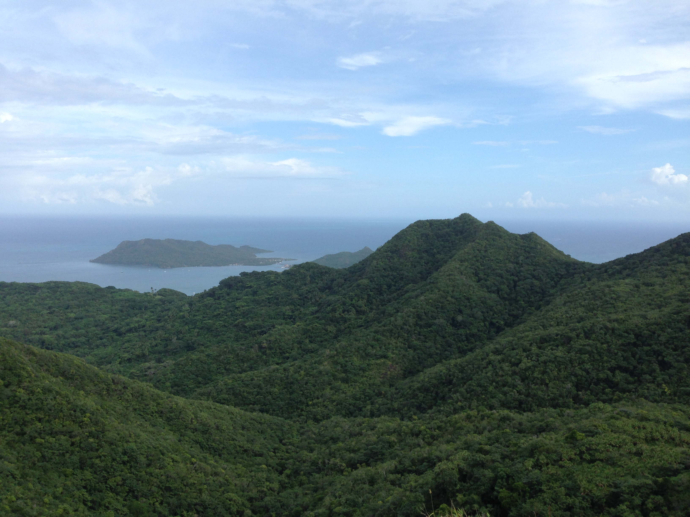

PLANT - SOIL - MICROBIAL INTERACTIONS

Mounting evidence suggests that interactions among microbes, soil, and plants have profound impacts on ecosystems, but the underlying mechanisms are complex and not yet fully understood. The Zalamea Lab aims to understand how interactions at these microscopic scales shape tree species distributions, forest dynamics, and forest function in the tropics and beyond. Our research integrates large-scale field, greenhouse, and laboratory experiments with molecular techniques to address fundamental questions about the distribution and maintenance of biodiversity in tropical forests.